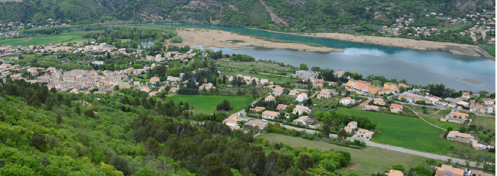

Chateau-Arnoux Saint-Auban
La ville de Château-Arnoux-Saint-Auban est située en Haute Provence sur la rive droite de la Durance au cœur du département des Alpes de Haute-Provence. Accessible depuis Aix Marseille par l’A 51 et depuis Grenoble par la Route Napoléon et l’A 51, Château-Arnoux-Saint-Auban est au carrefour de cet Axe durancien et de la route Napoléon conduisant à Nice. 5ème ville du département des Alpes de Haute-Provence, elle compte 5500 Habitants. Chef-lieu du Canton du même nom, elle est la ville centre du Pays Durance Provence et de la Communauté d'Agglomération Provence Alpes Agglomération qui commpte près de 47 000 habitants.
Le Cyclope se situe plus vers le nord de Chateau-Arnoux, à cinq minutes à pieds de la Mairie.